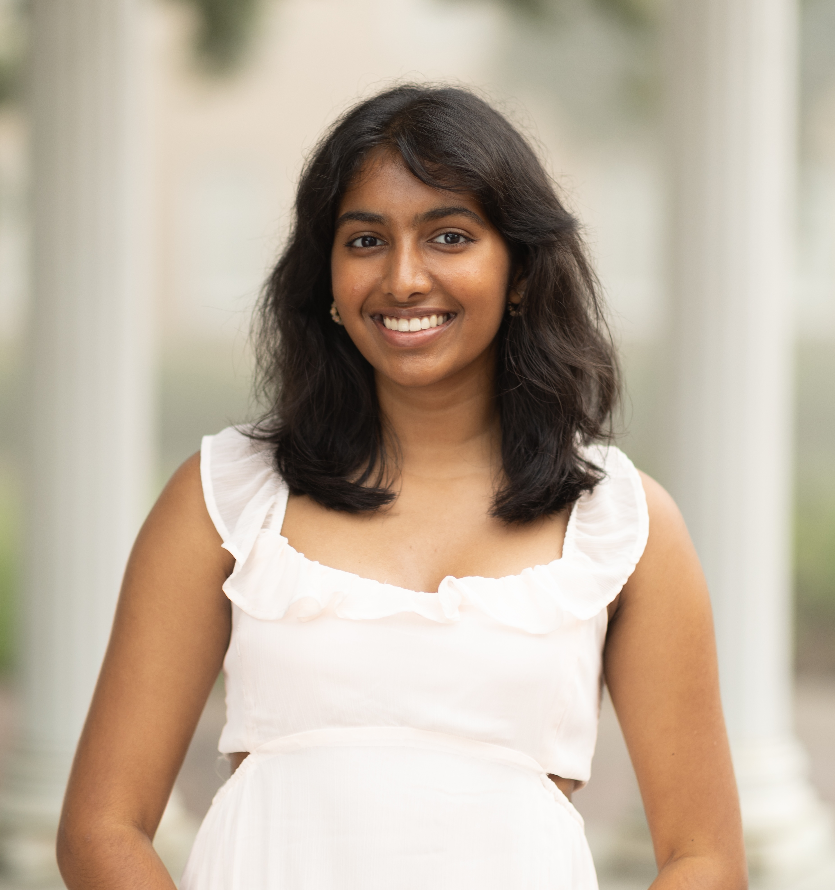
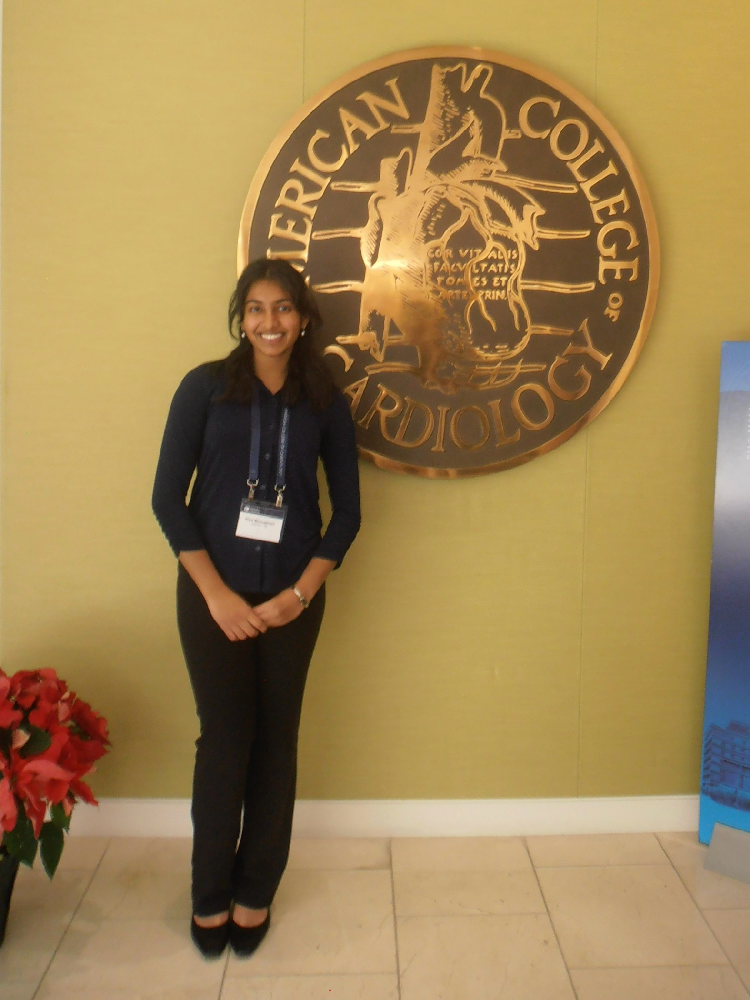

I’m Riya, and I am from Matthews, North Carolina. I am currently a student at UNC Chapel Hill graduating in May 2028.
I’m pursuing a double major in Biology and Computer Science with an intended minor in Mathematics to learn how to develop
interdisciplinary solutions that utilize technology to address critical healthcare issues.
In my senior year of high school, I used Excel to discover a relationship between artificial valve size and blood leak after
transcatheter aortic valve replacement (TAVR) during an independent research project with Dr. John Vavalle in UNC’s Heart Valve Clinic.
I saw how computer science could be used to aid physicians in sizing valves, and I was drawn to the ways technology can be used to optimize procedures.

My passion for medicine heightened after witnessing my close friend’s mother pass away from a heart attack – an event that gave a new meaning
to the research I was conducting in UNC’s Heart Valve Clinic. Despite witnessing multiple procedures that reduce the risk for myocardial infarctions,
I saw firsthand that these interventions sometimes arrive too late, when a patient's underlying risk factors have gone unnoticed or unmanaged.
This realization, combined with my interest in biology, inspired me to analyze the body’s internal mechanisms to better understand and mitigate patient risk.
Currently, I am an undergraduate researcher in both the Bautch Laboratory and Cardiovascular Modeling and Simulation Laboratory at UNC, using a biological
and computational approach to analyze blood flow and its effect on cell behavior and valvular pressures, respectively. In the future, I hope to develop models
to refine pre-procedural planning and minimize cardiovascular risk for patients. This summer, I will be working in both labs while taking Discrete Mathematics and
Biological Research Skills.